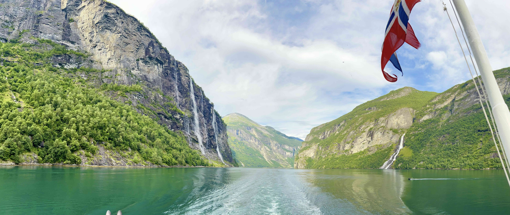
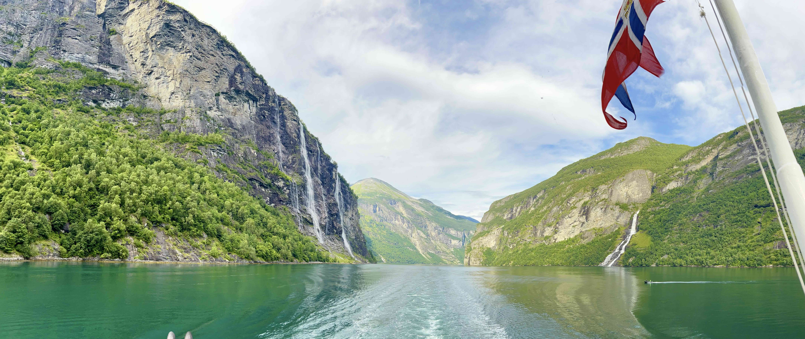

James Ferrare
Hello! I'm a graduate student in the Biophysics PhD Program at Stanford University.
I work in the lab of Dr. Benjamin Good, where my research combines tools from statistical
physics and theoretical population genetics.
My current work focuses on studying the role of chunk-like recombination in large adapting populations.
Many microbes can exchange genetic material through a process known as horizontal gene transfer.
We are interested in a simple question: at what rates does HGT affect the success of new genetic variants?
Previously, I've also studied how natural selection acts on mutations that alter the short-term fitness of an organism,
as well as the rates and benefits of future mutations. You can check out our paper here.
Prior to Stanford, I studied international development, mathematics, and physics at Tulane
University in New Orleans. Outside of science, I love to backpack and explore the Bay Area.


 
